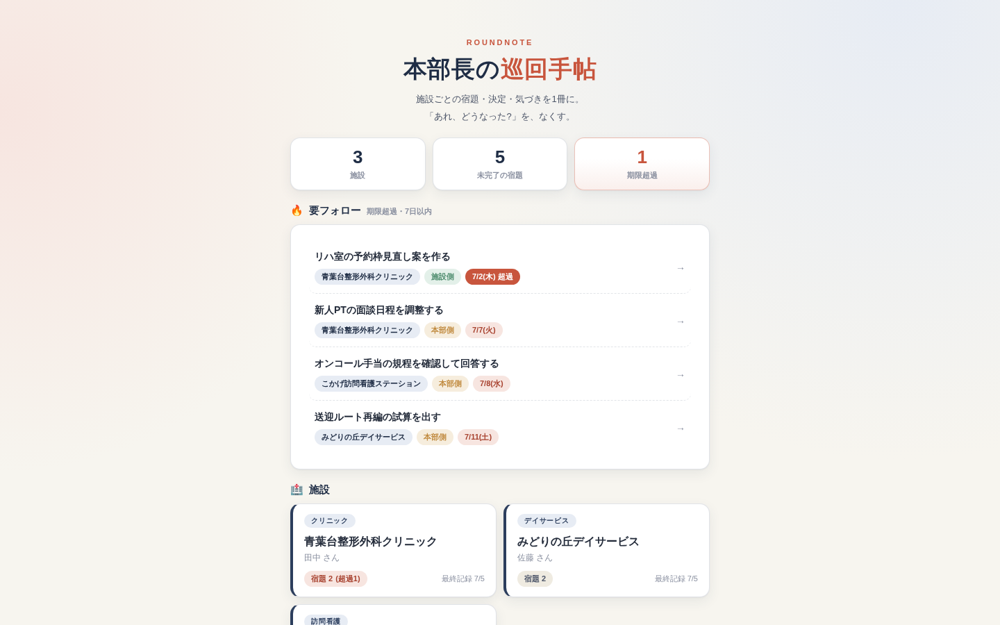

01 — Management & Operations · 6 Tools
経営・運営系。
リハ部門・外来クリニックの運営、採用、面接、診察オペレーション。「数字で詰めない、数字で対話する」ための道具たち。

PRODUCT 01
RehaBoardリハボード
リハビリ部門の運営を、1画面で。月選択・期間切替・KPIカスタマイズ。
詳しく見る

PRODUCT 02
MedBoardメドボード
外来クリニックの患者フローを、2施設横並びで。「異変に気づく」のが目的。
詳しく見る

PRODUCT 04
HireBoardハイヤーボード
医療機関の採用をカンバンで。9紹介会社・職種別フィー自動計算。
詳しく見る

PRODUCT 08
InterviewKit面接官の手帖
医療機関の構造化面接ツール。職種×レベルで質問自動生成、事実と印象を分けて記録。
詳しく見る

PRODUCT 06
ConsultSimコンサルトシム
診察オペレーション設計シミュレーター。1診/2診 × 曜日カスタム × グループ同期。
詳しく見る

PRODUCT 13
RoundNote本部長の巡回手帖
複数施設の宿題・決定・気づきを1冊に。訪問前に「今日のアジェンダ」が立ち上がる。
詳しく見る